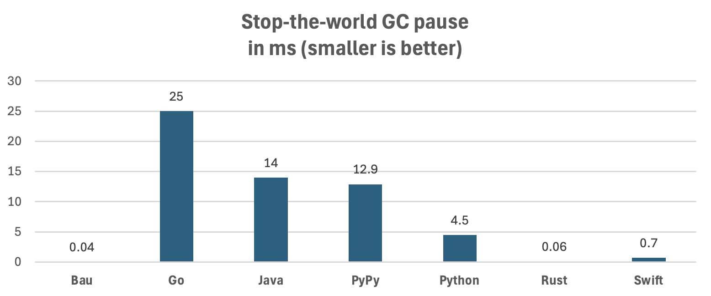

In addition to being a very fast and user-friendly programming language, one of the highlights of this language is that it does not suffer from stop-the-world garbage collection pauses.

See below for details of the test setup.
Programming languages today mainly use the following strategies to manage heap-allocated objects. Each strategy has some advantages and disadvantages. This is a simplification: some languages are hybrids and configurable (eg. Rust and C++ also offers reference counting); listed are only the defaults:
Bau uses reference counting by default; for for performance-critical areas, an easy-to-use variant of ownership / borrowing is supported. There are no stop-the-world GC pauses, and peak memory usage, compared to tracing garbage collection, is reduced. Memory management is deterministic, and relatively easy to use. Stack overflow during destruction is prevented for almost all cases. There is no weak references and automatic cycle detection currently, so that some manual work is needed to prevent cycles.
If a type has a close function, then it is called before
the memory is freed. It is not allowed to re-link the freed object in
this method; if this is done, then the program panics.
Reference counting can form cycles. As an example, an object can
reference itself, in which case the reference count can not drop to
zero, even if the object is not referenced from anywhere else. In this
programming language, currently such cycles are not detected or
prevented. It is the task of the developer to prevent them where needed.
To avoid cycles, explicitly set fields to null.
Where speed is critical, use single ownership, by adding
+ to the type, and borrow with &.
type Tree
left Tree+?
right Tree+?
fun Tree+ nodeCount() int
result := 1
l : &left
if l
result += l.nodeCount()
r : &right
if r
result += r.nodeCount()
return resultIn this case, reference counting is not used. During borrowing, it is not allowed to call a method that directly or indirectly de-allocates objects of the given type.
This language is transpiled to C. Both reference counting as well as
ownership use the malloc and free methods of
the C standard library by default to allocate and de-allocate objects on
the heap.
However, an alternative O(1) malloc / free
implementation called "TmMalloc" is included, which offers similar
guarantees than the real-time memory allocation library TLSF
(Two-Level Segregated
Fit). This further reduces worst-case delays on dynamic memory
management. Because it uses an allocation strategy that is similar to
area allocation, it is often faster than the default malloc
/ free implementations (see benchmark results below). To
enable TmMalloc, use -useTmMalloc true when transpiling to
C:
java -jar bau.jar -useTmMalloc true -O3 *.bauDeallocation of one object can indirectly cause deallocation of a large number of nested objects. One such example is a long linked list: if the head is deallocated, indirectly all the linked entries are de-allocated as well.
Deep deallocation chains can cause stack overflow in some languages, e.g Rust, unless if deallocation is implemented in user code. Stack overflow is not an issue in languages that use tracing garbage collection, eg. Java, Python, and Go.
This language uses the following approach to prevent stack overflow for most cases: deallocation is recursive up to 2048 entries. If there are more entries to be deallocated at once, the objects to be deallocated are added to a stack instead. Entries in this stack are processed in a loop instead of using recursion. The deallocation stack size is 1024; if exhausted, deallocation switches back to recursion. This approach prevents stack overflow in almost all cases: both long linked lists as well as large array of references are supported. Stack overflow is still possible with a combination, eg. large arrays that reference long linked lists that itself point to arrays. For such cases, either the configured values needs to be changed, or the de-allocation needs to be done in code.
When deallocating an object, all nested objects that need to be deallocated are processed immediately and synchronously (but not necessarily recursively, see above in "Stack-Save Deallocation"). This behavior is sometimes called deallocation cascade or destruction chain. There are some advantages and disadvantages. The advantages are that deallocation is synchronous and deterministic. Memory is released promptly. For some use cases, this behavior might be problematic. The design of the destruction algorithm would allow for deferred processing, but it would require changing the central allocation / deallocation algorithm (which is written in C).
To understand the effects of memory management, two benchmarks are included: the BinaryTrees benchmark from "The Computer Language Benchmarks Game", and the "Linked List" benchmark from Daniel Lemire. The linked list benchmark also measures stop-the-world garbage collection pauses which are typical for tracing garbage collection, in the row "delay (ms)".
| Benchmark | Bau RC | Bau | Bau RC TmMalloc |
Bau TmMalloc |
Go | Java | PyPy | Python | Rust | Swift |
|---|---|---|---|---|---|---|---|---|---|---|
| Binary Trees, seconds | 4.9 | 3.5 | 2.7 | 2.4 | 6.8 | 2.0 | 5.5 | 67.5 | 4.1 | 10.8 |
| Linked List, seconds | 18.7 | 13.6 | 10.6 | 8.3 | 22.1 | 6.2 | 8.3 | 129.3 | 11.0 | 39.0 |
| Linked List, delay (ms) | 3.6 | 0.6 | 0.05 | 0.04 | 25.0 | 14.0 | 12.9 | 4.5 | 0.06 | 0.7 |
(Runtime in seconds, and worst-case delay in milliseconds. Lower is better. Measured on an Apple MacBook Pro M4.)
For the linked list test, programming languages that use tracing GC (Go, Java, PyPy), the maximum delay between runs is many milliseconds.
For Java, JDK 25 was used for testing. Pauses depend on the garbage
collection algorithm used and the memory available. The option
-XX:MaxGCPauseMillis=0 is not supported; later values
doesn't seem to have the desired effect. The shortest pauses of around
1.5 ms were observed with -Xmx4g -XX:+UseShenandoahGC,
which is about twice the amount of memory used otherwise.
Both Bau and Rust and Bau have, when using the default
malloc and free implementations, also
sometimes a delay of a few milliseconds. When using a (near-) real-time
malloc / free, the pauses are much
shorter.
For Rust, the Linked List test would overflow the stack when freeing
the large linked list, because Rust recursively frees (drops) objects.
To avoid this stack overflow, an explicit drop method needs
to be implemented. Bau does not need an explicit implementation.
Download and build the latest version:
git clone git@github.com:thomasmueller/bau-lang.git
cd bau-langUsing Maven:
mvn -DskipTests clean installUsing Make:
make jarCompiling and Running the C, Java, and Bau versions:
mkdir -p target
cd target
echo "== Bau ============"
cp ../src/test/resources/org/bau/benchmarks/bau/* .
find . -type f ! -name "*.?*" -delete
java -jar bau.jar -O3 -useTmMalloc false *.bau
for i in {1..3}; do time ./binaryTrees 20; done
for i in {1..3}; do time ./binaryTreesRefCount 20; done
for i in {1..10}; do time ./linkedList; done
for i in {1..10}; do time ./linkedListRefCount; done
java -jar bau.jar -useTmMalloc true -O3 *.bau
for i in {1..3}; do time ./binaryTrees 20; done
for i in {1..3}; do time ./binaryTreesRefCount 20; done
for i in {1..10}; do time ./linkedList; done
for i in {1..10}; do time ./linkedListRefCount; done
echo "== Go ============"
cp ../src/test/resources/org/bau/benchmarks/go/* .
find . -type f ! -name "*.?*" -delete
go build -ldflags="-s -w" binaryTrees.go
go build -ldflags="-s -w" linkedList.go
for i in {1..3}; do time GOMAXPROCS=1 GOMEMLIMIT=2GiB ./binaryTrees 20; done
for i in {1..10}; do time GOMAXPROCS=1 GOMEMLIMIT=2GiB ./linkedList; done
echo "== Java ============"
javac ../src/test/java/org/bau/benchmarks/*.java -d .
time java -Xmx100m org.bau.benchmarks.Loop org.bau.benchmarks.BinaryTrees 20
time java -Xmx2g org.bau.benchmarks.Loop org.bau.benchmarks.LinkedList
for i in {1..3}; do time java -Xmx100m org.bau.benchmarks.BinaryTrees 20; done
for i in {1..10}; do time java -Xmx2g org.bau.benchmarks.LinkedList; done
for i in {1..10}; do time java -Xmx2g -XX:+UseShenandoahGC org.bau.benchmarks.LinkedList; done
echo "== Python via PyPy ============"
cp ../src/test/resources/org/bau/benchmarks/python/* .
for i in {1..3}; do time pypy3.10 binaryTrees.py 20; done
for i in {1..10}; do time pypy3.10 linkedList.py; done
echo "== Rust ============"
cp ../src/test/resources/org/bau/benchmarks/rust/*.rs .
find . -type f ! -name "*.?*" -delete
rustc -C opt-level=3 binaryTrees.rs
rustc -C opt-level=3 linkedList.rs
for i in {1..3}; do time ./binaryTrees 20; done
for i in {1..10}; do time ./linkedList; done
echo "== Swift ============"
cp ../src/test/resources/org/bau/benchmarks/swift/*.swift .
find . -type f ! -name "*.?*" -delete
swiftc -O binaryTrees.swift -o binaryTrees
swiftc -O linkedList.swift -o linkedList
for i in {1..3}; do time ./binaryTrees 20; done
for i in {1..10}; do time ./linkedList; done
echo "== Python (CPython) ============"
cp ../src/test/resources/org/bau/benchmarks/python/* .
for i in {1..3}; do time python3 binaryTrees.py 20; done
for i in {1..10}; do time python3 linkedList.py; done
cd ..